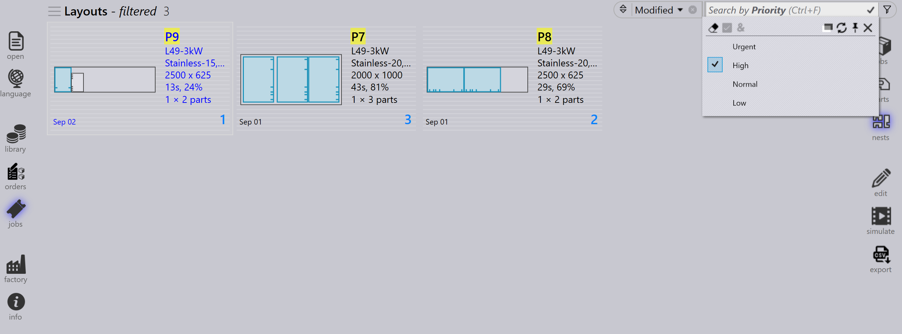

ジョブフィルター
Job Page Filters は、選択した条件に一致するアイテムのみを表示することで、Jobs、Active Parts、Nests を見つけるのに役立ちます。これにより、ジョブや部品の検索、並べ替え、管理が簡単になり、ワークフロー全体の効率が向上します。
利用可能なフィルターの例
Priority と Due on
-
Priority フィルターを使用すると、割り当てられた優先度（Urgent、High、Low、Normal）に基づいて部品またはジョブを検索して表示できます。
-
特定の優先度レベルを選択すると、その特定の優先度を持つ部品のみが結果で強調表示または表示されます。
-
たとえば、High Priority を選択すると、システムはネスト上で High Priority としてマークされた部品のみをフィルターして強調表示します。

-
Due on フィルターを使用すると、割り当てられた日付で部品またはジョブを検索して表示できます。
-
特定の納期を選択すると、その特定の納期を持つ部品のみが結果で強調表示または表示されます。
-
Today、Yesterday、Tomorrow などの事前定義された納期フィルターとは別に、検索テキストボックスに yymmdd 形式でカスタムの日付値/範囲を入力することもできます。
-
不等号演算子（<、<=、>、>=、=）に日付値を続けた式を使用することもできます。例: >=250901 は、2025 年 9 月 1 日以降が納期のすべてのアイテムを検索します。
|
フィルターリストが検索コンテンツを隠す場合は、Toggle opacity |
Part name/ Layout name
-
Part name フィルターは、jobs ページと nest ページで利用できます。
-
部品名を入力すると、正しい部品をすばやく選択できるように候補リストが表示されます。
-
候補リストから 1 つ以上のアイテムを選択すると、検索結果が選択した部品のみに絞り込まれます。
-
Jobs ページでは、この動作は Layout Names を含むように拡張され、ユーザーは部品名またはレイアウト名のいずれかで検索できます。
Remnant
-
Remnant フィルターを使用して、残材の可用性に基づいてレイアウトを検索します。
-
ドロップダウンには次のオプションが表示されます:
-
No Remnant - 残材が作成されていないレイアウトを一覧表示します。
-
Exists - 残材がすでに存在するレイアウトを一覧表示します。
-
Added - 新しい残材が追加されたレイアウトを一覧表示します。
-
-
残りのシート材料を効率的に識別して管理するのに役立ちます。